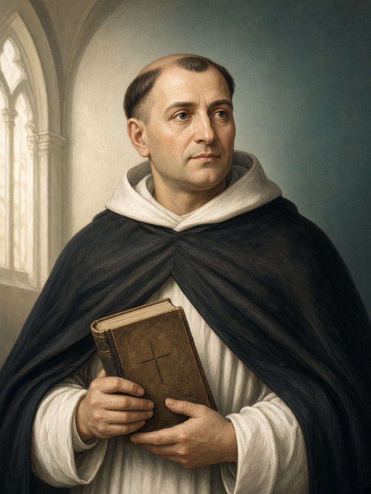

Qui studi i concetti con ordine. Il fumetto aiuta a ricordarli; questa pagina li spiega con definizioni, esempi e contrasti.

Tommaso d’Aquino
Capitolo 1
Vita e opere (1225–1274)
Tommaso d’Aquino nasce intorno al 1225 a Roccasecca (Lazio) e muore nel 1274. Entra nell’Ordine dei Predicatori (domenicani): bianco e nero dell’abito, studio e predicazione. Studia e insegna soprattutto a Parigi, ma anche in Italia.
Non è un mistico isolato: è un professore che vuole mettere ordine tra Aristotele (ragione) e la rivelazione cristiana (fede).
Inizia l’insegnamento universitario a Parigi.
Lavora alla Summa Theologiae: grande “somma” sistematica di teologia e filosofia.
Muore a Fossanova, mentre va al Concilio di Lione.
Perché conta a scuola
Tommaso è il punto di riferimento della filosofia scolastica: chi parla di “prove dell’esistenza di Dio”, di legge naturale o di armonia fede/ragione, parla spesso (anche senza saperlo) del suo linguaggio.
Ricorda così Domenicano · Parigi · Summa Theologiae: tre ancore biografiche.
Capitolo 2
Fede e ragione
Tommaso rifiuta due estremi: (1) «basta la fede, la ragione non serve»; (2) «basta la ragione, la fede è superstizione».
Ragione
Apre: può conoscere molte verità sul mondo e anche alcune verità su Dio (es. che Dio esiste) partendo dall’esperienza.
Fede
Eleva: accoglie verità rivelate che la sola ragione non raggiunge (es. Trinità, Incarnazione), senza contraddire ciò che la ragione sa davvero.
Esempio da adolescente
La fisica spiega come cade un oggetto; non ti dice da sola se la tua vita ha un senso ultimo. Per Tommaso la ragione non è nemica della fede: è una scala incompleta. La fede non spegne la luce: aggiunge piani superiori.
Ricorda così Stesso Autore della verità → fede e ragione non si contraddicono; la ragione apre, la fede eleva.
Nella metafisica tomista ogni creatura è composta: ha un’essenza (ciò che è) e un’esistenza (il fatto di essere).
Essenza: la “ricetta” di una cosa (es. «essere umano»: animale razionale).
Esistenza: il fatto che quella ricetta sia realizzata qui e ora (tu esisti; un personaggio inventato no).
In Dio coincidono
In Dio non c’è scarto tra «cosa è» e «che esiste»: la sua essenza è l’essere. Nelle creature sì: potresti immaginare un unicorno (essenza) senza che esista; e tu esisti, ma potresti non esistere.
Ricorda così Creature = essenza + esistenza separate. Dio = Essere puro, senza composizione.
Capitolo 4
Le cinque vie
Nella Summa Theologiae (I, q. 2, a. 3) Tommaso propone cinque vie: percorsi razionali che partono dal mondo sensibile e concludono a Dio. Non sono esperimenti di laboratorio: sono argomentazioni filosofiche.
Schema comune: punto di partenza (fatto dell’esperienza) → principio → impossibilità di una catena infinita → conclusione (Dio sotto un certo “nome”).
Via I · Dal moto
Parte da: nel mondo qualcosa si muove (cambia: una palla rotola, una pianta cresce, tu impari).
Conclude a: un Primo Motore immobile — ciò che muove senza essere mosso.
Esempio: le biglie sul tavolo si spingono a catena; se ogni mossa dipende da un’altra, serve un inizio che non sia a sua volta solo un altro pezzo della catena.
Via II · Dalla causa efficiente
Parte da: ogni effetto ha una causa (i genitori generano i figli; il fuoco riscalda).
Conclude a: una Causa Prima non causata.
Esempio: se ogni causa fosse solo intermediaria, la catena non spiegherebbe mai perché c’è qualcosa invece del nulla causale.
Via III · Dalla contingenza
Parte da: le cose possono esserci o non esserci (tu potevi non nascere; questa stanza poteva non esistere).
Conclude a: un Essere necessario — che non può non essere.
Esempio: se tutto fosse solo “forse sì, forse no”, a un certo punto non ci sarebbe nulla. Eppure c’è il mondo → serve un fondamento necessario.
Via IV · Dai gradi di perfezione
Parte da: esistono gradi di bontà, verità, nobiltà (un’azione più giusta di un’altra; un sapere più pieno).
Conclude a: un Massimo — causa e misura di ogni perfezione.
Esempio: dire «più buono» ha senso solo se c’è un orizzonte di bontà piena rispetto a cui confronti.
Via V · Dal governo delle cose (teleologia)
Parte da: anche esseri senza conoscenza agiscono come se avessero un fine (seme → pianta; occhio → vedere).
Conclude a: un Ordinatore intelligente che dirige la natura.
Esempio: la freccia non vola da sola verso il bersaglio senza un arciere; l’ordine naturale, per Tommaso, rinvia a un’intelligenza.
Attenzione didattica
Le cinque vie non sono «prove da laboratorio» né dimostrazioni matematiche. Sono argomenti metafisici. Capirle significa: (1) il punto di partenza; (2) la conclusione tipica di ciascuna via.
Ricorda così Moto → Motore · Causa → Causa Prima · Contingenza → Necessario · Gradi → Massimo · Fine → Ordinatore.
Per Tommaso la legge eterna è la ragione divina che governa il mondo. La legge naturale è la partecipazione della creatura razionale a quella legge: ciò che la ragione pratica scorge come giusto da fare.
Il primo precetto, semplice e potente:
Fare il bene e evitare il male.
Da lì discendono tendenze razionali: conservare la vita, cercare la verità, vivere in società, educare…
Non è «seguire l’istinto» cieco: è la ragione che riconosce beni umani fondamentali.
Le leggi umane positive dovrebbero essere coerenti con questa legge; se contraddicono il bene umano, perdono autorità morale.
Esempio
Mentire per far del male a un compagno: anche se «nessuno se ne accorge», la ragione riconosce che tradisce fiducia e bene comune. Non serve un regolamento scolastico per vedere che è male.
Ricorda così Legge naturale = ragione pratica sul bene umano. Primo precetto: fai il bene, evita il male.